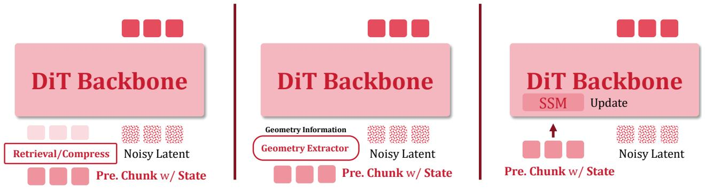

把 action world model 的记忆收益从 backbone、训练、检索和评估差异中剥离出来，形成可控矩阵。
Echo-Memory: A Controlled Study of Memory in Action World Models Wayne King, Zeyue Xue, Yuxuan Bian, Jie Huang, Haoran Li 等；arXiv 元数据未列机构。 arXiv recent-list补漏 + code 原文链接
先说结论。长期一致性和记忆读写会成为视频基础模型的核心能力，这篇适合作为 evaluation/memory design 参考。 把 action world model 的记忆收益从 backbone、训练、检索和评估差异中剥离出来，形成可控矩阵。

Figureure 2 · Overview of four representative approaches to memory in action world mFigure 2 Overview of four representative approaches to memory in action world models. Under a shared video diffusion backbone and a shared camera-action interface, the approaches differ only in how historical information is stored and read. We compare four families throughout: Context, Compression, Spatial, and State-Space.这张图概括 Echo-Memory 的整体方法流程。阅读时先看模块之间传递的训练信号，再看作者如何把目标拆成可优化的子问题。Figureure 1 · Abstract teaser and workflow of Echo-MemoryFigure 1 Abstract teaser and workflow of Echo-Memory. Given a text description, historical observations, and the camera/action state, an action world model must generate chunk-wise video while carrying memory across revisits. The figure positions Context, Compression, Spatial, and State-Space families as representative designs for preserving a revisitable world.这张图/表用于判断 Echo-Memory 的实验收益来自哪里。重点看替换、消融或跨模型设置下趋势是否一致，而不是只看单个最高分。